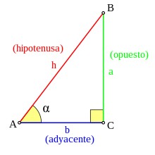
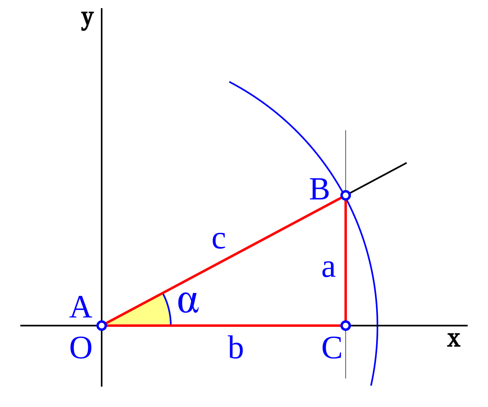
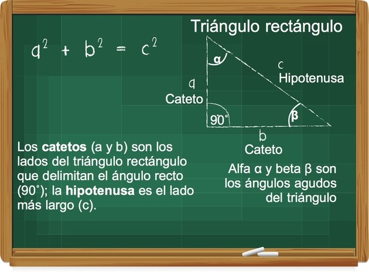

Funciones trigonométricas


Las funciones trigonométricas se pueden definir como el cociente entre dos lados
de un triángulo rectángulo, asociado a sus ángulos. Los ángulos en las funciones
trigonométricas se expresan como radianes. Los radianes son otra manera de
medir la apertura de un ángulo, así como lo son los grados, que están en función
del radio de una circunferencia.Son las funciones cuyo argumento, o variable
independiente, es un ángulo. Estas usualmente incluyen términos que describen
la medición de ángulos y triángulos, tal como:
-
Seno
-
Coseno
-
Tangente
-
Secante
-
Cosecante
-
Cotangente
Funciones trigonométricas en el triángulo rectángulo
